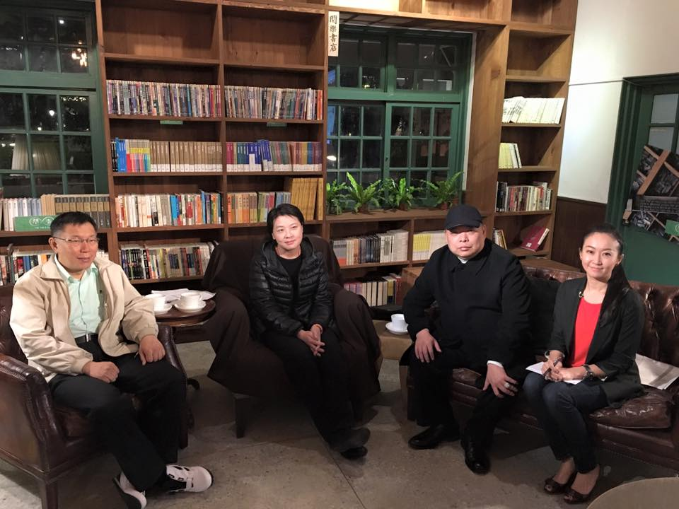
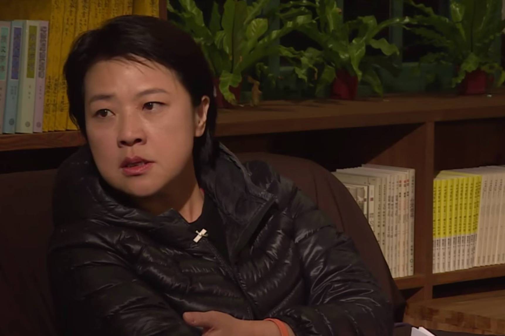
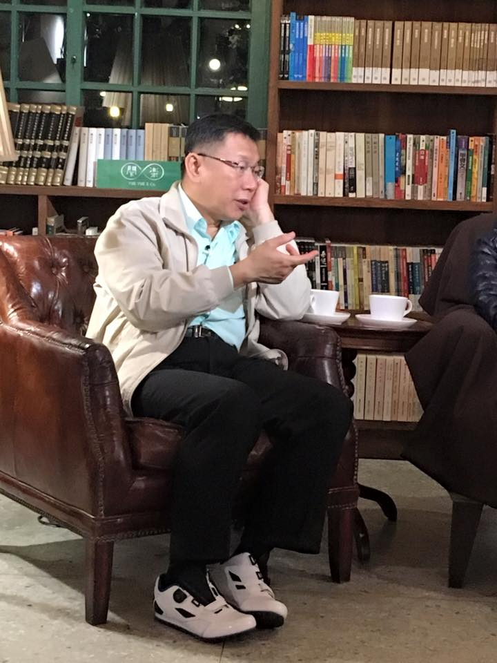
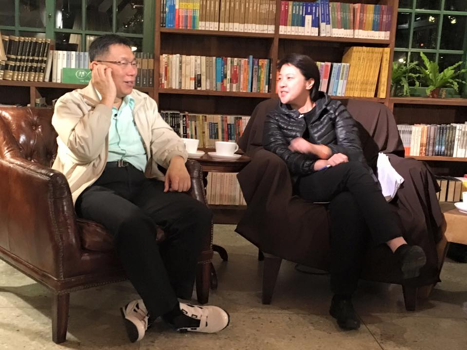

親民黨立委候選人黃珊珊，這次也在由泛綠陣營組織的首都改革聯盟的立委之列，讓不少人感到訝異：向來被視為泛藍的親民黨，怎麼會在名單內？
「深夜柯文哲，夜問新國會」系列座談，由首都改革陣線主辦，讓台北市長柯文哲與 8 個選區跨黨派的立委參選人直接面對面，暢談理念、討論對新國會的想像。而日後進入國會如何與台北市合作，具體的政策及做法為何，這一場被網友評為最有內容的座談中，黃珊珊給了非常詳盡的答案。具親民黨身分的黃珊珊如何用實力讓泛綠陣營信服？請看──
大家最大的疑問即是，身為親民黨為何會加入首都改革聯盟？面對質疑，黃珊珊說她「就是來參選」。對於民進黨的禮讓，她表示感謝。先前就傳出國民兩黨皆想在港湖區與黃珊珊合作，黃珊珊笑言，藍的說我綠，綠的說我藍，「那麼我一定是做對了什麼事情」，強調她仍會做自己，「大家會覺得很奇怪，我覺得大家只是不習慣。」
台大法律畢業，擔任執業律師 6 年，在 28 歲時選上議員，就此連續 5 屆皆當選議員。黃珊珊認為她從政的 17 年正好經歷了藍綠對立最嚴重的時期，而這次與首都改革聯盟串聯，正是「不同的人要學習坐下來共存」。黃珊珊認為她是代表台北市，而不是代表政黨或聯盟，她的服務不分黨派也不分藍綠。
黃珊珊成為首都改革聯盟的一員，被稱作「橘子綠了」，柯文哲這時特別開口對黃珊珊說：「做自己就好！」
柯以尊重數據的角度切入，他說現階段台灣人自認為具有藍綠色彩者，其實不到 50%，而他參選台北市長時並未加入黨派，因此抓住了另外 50% 以上的人。
在藍綠議題上，柯文哲建議，大家常常聚焦在兩方想法不同之處，「但我們應該要看更多相同點，把不同點壓到最低」。黃珊珊則指出是中道的力量，讓兩邊人都可以信任，「信任我可以去做事，而不是意識形態的對立」。
「這個選區已經 4 年沒有立委，因為不想連任，也不做事。」提到上屆港湖區立委蔡正元，黃珊珊表示選民甚至會覺得丟臉，因為是「割闌尾」唯一成案的地方。此次參選立委，黃珊珊可能會扭轉多年來港湖區由國民黨立委勝出的慣例。
長達 17 年的議員經驗，黃珊珊對地方情況相當了解，她表示 17 年來每週二都在服務處提供法律服務，也經常到菜市場去擺「法律攤」。而民眾對法律的苦楚及困惑，也使黃珊珊決心，若進入國會，首要推動的就是司法改革。
「每次有判決我就會上電視，我都叫大家相信司法。因為你若不相信司法，你就要相信拳頭。」
她認為頂新案的判決結果，無法讓廠商回到正軌，甚至增加了人民的不信任感。
黃珊珊表示多年來的法律服務，看到很多判決結果都覺得很誇張，但還是希望人民相信司法，建立人民對政府的信任。並且要增加法官進用的多元性，除了考試，也可以從專業人士中引進。
網友問及選上立委後是否還會繼續諮詢，黃珊珊說選民服務是會感動。看到人民苦苦的臉進來，笑著出去，一兩週後送雞湯來，或是在菜市場中聽到民眾說黃珊珊曾協助過他，「那是政黨動員不會有的 feedback」，讓黃珊珊相當感動。一旁的柯文哲馬上有共鳴：「跟當醫生一樣！」
而先前傳出柯文哲屬意黃珊珊來擔任台北市副市長，對此柯文哲說：「她各方面都符合條件」，可惜先前黃珊珊在競選議員，選前不能講，選上議員後又不能馬上叫人家來當副市長，黃珊珊大笑說，這意圖使人不當選啊！
（柯Ｐ這天穿新鞋！）
身為席次不多的小黨，黃珊珊認為更要做好溝通，與其他人串聯，正如首都改革聯盟的意涵。她舉出，親民黨在台北市議會席次僅有兩席，「但我們提的法案不會比大黨少」。
而她對許多政策更是有非常具體的想法，從公共住宅看見都市更新條例的容積獎勵問題，在不同地區需要彈性去調整。她發現，其實台北市的公園已經夠多了，若將建案 40% 只能做公園及馬路的公共設施回饋，轉移部份給市政府運用，公共住宅的土地問題就能得到解決。
「很多錢都卡在中央法規。」
黃珊珊表示當她進入國會，就可以協助台北市與中央合作。「某些程度台北市有特殊性的」，例如十二年國教，在北北基區有太多的學校，以及跨區就讀的現象，使十二年國教在北北基變得一團亂，黃珊珊認為一個全國性的政策，由於首都的特殊性，必須要讓它有彈性。
而選區內的松山機場議題，黃珊珊認為只要桃園機場捷運完成，且第三跑道開始使用後就能負擔原先松山機場的運量。而港湖區內的變電所，則已經為台電找到遷移的地點，然而台電卻屢屢以限電、缺電做要脅，不願遷移。
至於全國性的議題，黃珊珊表示支持投票年齡下修到十八歲，而公投法的部分，她也舉出先前協助親民黨主席宋楚瑜連署參選總統，深感這樣的法律是「立法者害怕人民的權力超過他」。她說也許降低公投門檻，會使立委的權力下降，但人民權力的上升，也能讓立法者有所警惕，她覺得現階段門檻真的太高了。
國親兩黨向來被視為同盟，網友也好奇黃珊珊是否支持針對國民黨黨產的不當黨產處理條例。面對敏感議題，黃珊珊直接說「是」，親民黨已經提案，在這個會期中親民黨針對政黨法的其中一條進行修法，跟其他另立不當黨產處理條例的內容幾乎一樣。她說，在沒有法治的情況下，當年因為戰亂而做了很多的事情，民眾一開始是可以接受或忍受的。
「但是不可能永遠下去。」，黃珊珊堅信政府要解決，政府、或政黨不可以認為，不對的事情是當然的。
「對我來說，可能當時，或者是親民黨原來有的一些意識形態有些不同，所以我們自己要檢討，我們到底為什麼要跟它（國民黨）合作？是為了黨產嗎？」
「什麼叫做不當黨產？你如果是合法的黨產，沒有人叫你歸零。」
基於政黨公平競爭的立場、以及國家不該有不公不義的立場，黃珊珊表示支持不當黨產處理條例。